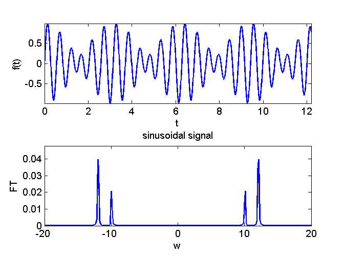
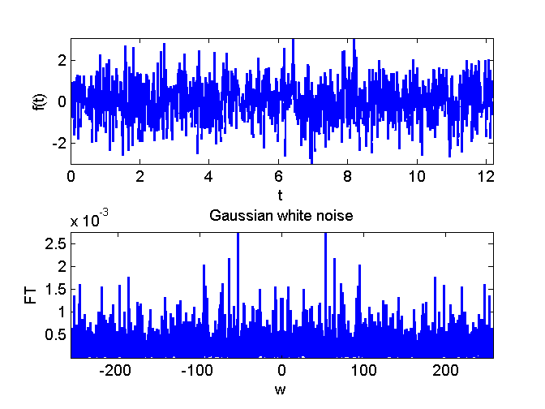
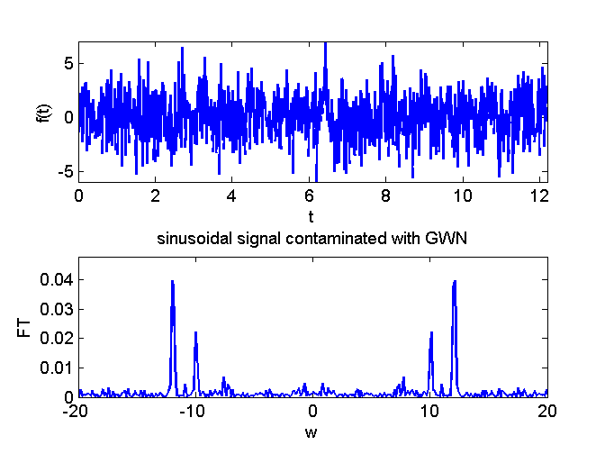

Contents
function demo_FourierTransform()
Parameters for the simulation
N = 2^12;
t0 = 0;
T = 50;
Simusoidal time series
t = linspace(t0,t0+T,N)';
w1 = 10; w2 = 12;
f = 0.4*sin(w1*t) + 0.6*sin(w2*t);
FT_f = fft(f)/N;
powerSpectrum = abs(fftshift(FT_f)).^2;
figure(1);
auxPlot(t,f,N,T,powerSpectrum)
AXIS_1 = [-20 20 0 1.2*max(powerSpectrum)];
axis(AXIS_1);
title('sinusoidal signal')

Gaussian white noise
X = randn(N,1);
FT_X = fft(X)/N;
powerSpectrum = abs(fftshift(FT_X)).^2;
figure(2);
auxPlot(t,X,N,T,powerSpectrum)
title('Gaussian white noise')
axis('tight');

Simusoidal time series contaminated with Gaussian white noise
noiseAmplitude = 2.0;
f = f + noiseAmplitude*X;
FT_f = fft(f)/N;
powerSpectrum = abs(fftshift(FT_f)).^2;
figure(3);
auxPlot(t,f,N,T,powerSpectrum)
axis(AXIS_1);
title('sinusoidal signal contaminated with GWN')

end
Auxiliary function
function auxPlot(t,f,N,T,powerSpectrum)
subplot(2,1,1);
nPlot = 1000; plot(t(1:nPlot),f(1:nPlot));
xlabel('t'); ylabel('f(t)');
axis('tight');
subplot(2,1,2);
wPlot = pi*N/T*linspace(-1,1,N);
plot(wPlot,powerSpectrum)
xlabel('w'); ylabel('FT');
end